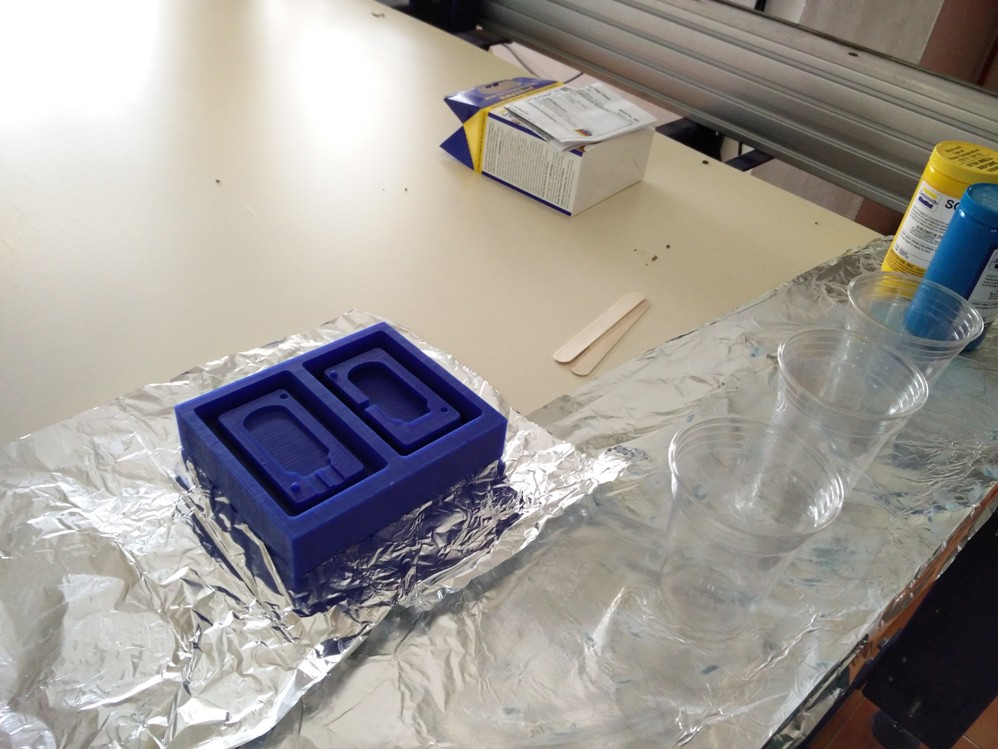
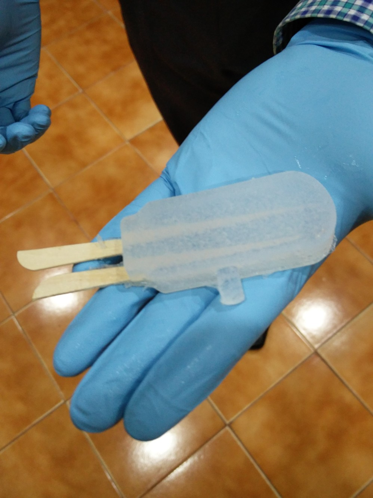

Molding Casting
Luciano once again brushed up the basics of molding casting process.
He gave us an insight to various aspects to be taken care of such as the angle to be maintained in the outer walls, kind of materials we can use, the soft to hard and hard to soft potocol followed in selecting the materials etc..
The material used for casting comes in two different enclosures and need to be mixed together in appropriate proportion for proper setting once it is poured in the mold. Depending upon the material used, there are two ways of doing this
We were also taught the necessary safety measures to be taken care while handling the raw materials used.
Since I wanted to design a mold for my final project, I did not try with the casting today. My work is documented along with my project documentation. The mold I wanted to design required a double sided one , It was too much of an asking for me with the limited exposure I have with antimony, but Luciano was very much interested with the final product I wanted to make and was very particular that I must never quit and should fabricate it on anycost. He helped a lot with his vast experiance in Rhino and we finally got it designed.
A preview of the mold design, rest of the process is documented in my Project Section
Toggle Menu
Design Thinking
In this session Luciano explained about the design aspects to be considered while designing our project. The key aspects explained are as follows,
The very first aspects to be thought are,
Based on the above aspects I decided to make a SMART PROBE!!.. This is basically a low power microcontroller based battery driven wireless proble which will measure the parameters such as Humidity, Temperature , Soil Moisture etc and send this data to a central hub wirelessly
The inspiration behind this is a real world requirement, an add on module to a product which I have alredy designed. It is a compact Intelligent Drip Irrigation System. I wanted to add this smart probe with the existing system to make the Intelligent contoller smarter.
Following is the picture of the Intelligent controller for your reference.
Toggle Menu
SMART PROBE - A low power Microcontroller based Wireless soil parameters measuring device!!
Time has come to make the good use of skills and processes learned in the prefab.Thiniking about the final project I was particular that, it should be something useful, a product rather than just a proto for demonstrating the skills we acquired during the last couple of weeks. Then I happen to remember about the requirement of developing a smart IoT powered Irrigation System which is under development.This inspired me to work in the direction of making a Fab Version of Smart Wireless Soil parameters measuring device. The intention is to develop an ultra low power microcontroller based battery powered wireless proble which will measure the parameters such as Humidity, Temperature , Soil Moisture etc and send this data to a central hub wirelessly. The hub is an improved version of my already developed Intelligent drip irrigation controller.Due to the limitation of time and components available, the first version presented here measures only the temperature and sends this data back to the hub wirelessly. Additional sensors for measuring humidity, moisture etc will be added in the upcoming versions.
Processes Used in the Project Development are,
Let me walk you through the different stages of development..
It all started with a rough sketch in my notebook and collecting the correct dimensions as shown below..
The schematic for the circuit is drwan using EAGLE..
The PCB is drawn using EAGLE..
The embedded circuit is built around PIC12F675, clocked at 4MHz using its internal Oscillator. It consists of inbuilt Analog port and the channel AN1 is used to measure the LM35 sensor's output. This tiny microcontroller does not have a serial port built in, hence a software serial communication was setup in PIN_5. The complete circuitry is powered using a 3V low power CR2032 coin cell.The serial data from the microcontroller is fed to 433MHz Transmitter, which inturn sends them to the Hub at 1200bps. The following shows the simulation of the circuit using proteus.
The firmware is developed using embedded C, the following screen shows the process using PICC Compiler.
The mold design is done using Rhino, Luciano did help me a lot in creating the drawing as I was very new to the software.
The wax milling is very much similar to that of milling a PCB so it was quite a easy job, but there are a few design considerations to be followed while using Wax for milling such as the clearence distance between the walls, angle to be kept on the mold design etc..
The wax milling consists of two processes,
As the name indicates roughing mills out the larger portions and finishing removes the fine unwanted areas.Appropriate bits are to used for each process.
The mold I wanted to mill required more than six hours of milling, Luciano suggested to keep the machine on through out the night. I left it to continue the process hoping that no power failuare will occour in between to spoil our good work..
To my good fortune, there was no interruption in power supply during night and the mold was perfectly milled by the next day morning :)
Now it is time for me to try my luck with casting..

I used the SORTA Clear 37 Silicon rubber material for the outer mold.
Luciano guided me through the proces, how to mix the A and B parts of the material, the way to pour it to the mold and also with the basic guidelines to minimize the air bubbles traped in the silicon.
While pouring the silicon to the mold utmost care should be taken to see that no air pockets are formed in the corners.
Though extreme care is taken, some amount of air will be traped as bubbles, this can be removed by gently tapping the mold horizontally with out distubing the silicon.
Once the curing time is over we can genlty remove the silicon mold from the wax as shown..
To my great joy, the mold seems to be perfect..
Now its time to make the Plastic mold using the newly molded silicon mold..
I used smooth cast 305 for this process.
Here also the process to be followed is much the same but it has a extermly fast action compared to silicon.
This material produces heat while settling down in the mold and hence extreme care has to be taken while using this.
The mold became hard in less than half an hour and we are excited to see how it is..
The mold seems to be perfect :) Thanks to luciano's guidence..

Luciano was having the last day here in Trivandrum, but he was eager to see before he leaves, if the design really matched to what we intend to make so even though the PCB was not ready, we decided to try using sticks of similar width..
Now I am no novice to the casting process and was eager to fill our mold using silicon..
Since this is a two sided mold care should be taken to make sure that both molds press to eachother firmly..
We waited eagerly for the settling time to be over.. and now we are about to open...
The mold looks perfect with the sticks embedded inside..

Its time to say goodbye to Luciano and he was indeed happy to see the efforts becoming fruitful..
The PCB for the probe is already designed using EAGLE and it just needs to be milled using the Roland Modela
I tried to mill two identical PCBs but with different drill dimensions, just to make sure that my through hole components also fit well.
The first one seems to have a little bigger holes than what is needed and hence the tracks are cut where they had junctions in the soldering points. But the second one seems to be ok, but it also suffered some problems due to the unevenness of the surface of PCB, but still looks good for the purpose. Another good thing to notice is that the dimensions of PCBs are perfectly matching the mold.
The firmware is developed using PICC compiler written using Embedded C. The microcontroller is programmed using PICFLASH ICD programmer.
In the following picture you can see a wireless communication with the microcontroller is established the data getting transmitted from the probe.This is received and displayed in the Hyperterminal of the PC. The baudrate and com port settings are also visible in the desktop screen
A closer look at the probe..
As no design for antenna is made in the PCB, I have used a small single strand wire for the time being to test the performance. I also missed to add a Switch in the initial design so two wires were taken out from the battery lead and a sliding swith was connected externally.
Now it is time to do the final casting process.. I prepared the silicon previously used and repeated the process
This time the calculation with quantity of material required was not perfect and a little amount of overflow of silicon through the sides can be seen while pressing the molds together
It was quater past twelve and I left it for curing while I take my break for lunch.
With lots of eagerness I opened the mold after the curing time.. well, it did not disappoint me.. The circuit has got fixed inside the silicon firmly..
I slowly pulled the silicon mold out of the plastic mold.. it looks fine other than the little extra silicon attached to the sides due to overflow
It was time for the ultimate test, I moved the sliding switch to the close position, but the LEDs which are supposed to light up once in five seconds did not light up, I tried to bend the silicon a little bit near the battery holder and to much of my relief, the controller started working, the LEDs are blinking now and it is trasnmitting data. Though I could not figureout exactly what caused the problem, the trick of bending it worked.
With my little Smart Probe :-)
There was little bit of silicon sticking around its sides due to the overflow while casting, I removed it and now the probe looks just as what I intented to :-)
All the design files can be downloaded from here.
Toggle Menu